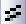

Fehlerbalken mit Füllfläche
ErrorBar-FillArea
Zusammenfassung
Dieses Diagramm zeigt drei Datensätze mit Fehlerbalken an. Die Fehlerbalken wurden als als Linien mit Füllflächen festgelegt. Transparenz wurde für alle drei Kurven festgelegt, so dass Daten in sich überschneidenden Bereichen deutlich zu erkennen sind.

Origin-Version mind. erforderlich: Origin 8.5.1 SR0
Was Sie lernen werden
- Erstellen der Fehlerbalken mit Füllbereich
- Festlegen von Transparenz für Fehlerbalken
- Festlegen udn Speichern der benutzerdefinierten Farbe
Schritte
Dieses Tutorial basiert auf dem Projekt: <Origin-Verzeichnis>\Samples\Tutorial Data.opj.
Sie können dieses Diagramm auch im Lernzentrum finden. (Wählen Sie Hilfe: Lernzentrum im Menü oder drücken Sie die Taste F11. Öffnen Sie dann Diagrammbeispiel: Linien- und Symboldiagramme).
- Öffnen Sie Tutorial Data.opj und navigieren Sie zum Ordner Error Bars with Fill Area im Projekt Explorer (PE).
- Markieren Sie alle Spalten in dem Arbeitsblatt. Wählen Sie im Menü Zeichnen: Einfache 2D: Liniendiagramm.

- Klicken Sie auf einen Fehlerbalken der drei Zeichnungen und dann auf die Schaltfläche Füllfläche in der Minisymbolleiste.
- Klicken Sie auf eine Zeichnungslinie und dann auf die Schaltfläche Linienfarbe in der Minisymbolleiste. Drücken Sie unter der Registerkarte Nach Zeichnungen die Strg-Taste und klicken Sie auf die Farbliste, um den Dialog Inkrementeditor zu öffnen.
- Im Dialog Inkrementeditor können Sie die Farbliste benutzerdefiniert anpassen. Klicken Sie auf die erste Farbe in der Liste und dann auf Farbe hinzufügen unter Benutzerdefiniert, um den Dialog Farbe zu öffnen. Geben Sie den Farb-Hex-Code 9BBB59 ein, um eine benutzerdefinierte Farbe, wie unten, zu erstellen:
- Passen Sie die zweite und dritte Farbe mit Hex(#C0504D) bzw. Hex(#4F81BD) benutzerdefiniert an. Löschen Sie die anderen Farben in dieser Liste und speichern Sie diese Farbinkrementliste. Diese neue Farbliste wird dann als Inkrementliste für die Zeichnungen festgelegt.
- Klicken Sie erneut auf eine Zeichnungslinie und setzen Sie die Liniendicke auf 3.
- Klicken Sie doppelt auf eine Zeichnungslinie, um den Dialog Details Zeichnung zu öffnen, und setzen Sie die Transparenz auf 50 %
- Klicken Sie nacheinander auf den Fehlerbalken der drei Farben, um die Füllfarbe auf Hex(#9BBB59), Hex(#C0504D) bzw. Hex(#4F81BD) zu setzen.
- Klicken Sie auf die Schaltfläche Antialiasing aktivieren/deaktivieren , um das Diagramm zu glätten.